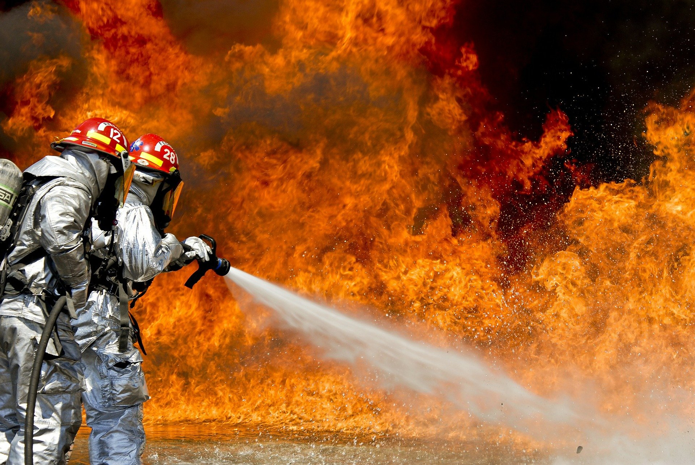

Causas dos incêndios florestais em Portugal
Os incêndios rurais em 2019 consumiram 41.992 hectares, tendo sido registadas 10.913 ocorrências. Os fogos florestais têm causas várias, sendo a ação humana determinante na origem dos incêndios florestais. Para existir ignição tem que se atingir a temperatura de cerca de 180ºC, dificilmente esta temperatura é atingida de forma natural, com a exceção das faíscas provocadas pelas trovoadas.
Causas negligenciais/acidentais
As causas negligenciais ou acidentais dos incêndios florestais devem-se a atos humanos, devido ao uso do fogo na pastorícia, na agricultura, bem como em práticas de caça. As ocorrências por atos intencionais estão ligadas a interesses economicistas em torno de terrenos, ou pretensões de alteração do uso ou ocupação do solo, nomeadamente por parte de interesses imobiliários, de agricultores e proprietários florestais. Alguns dos atos de fogo-posto são efetuados por divertimento, ou seja, porque dá gozo a quem pratica este ato criminoso, por vezes são perturbações motivadas por situações de isolamento ou solidão, ou pelo prazer que têm em verem os bombeiros e os meios aéreos de combate às chamas em atuação, muitos dos incendiários chegam mesmo a participar no combate às chamas.
Causas naturais ou físicas
São provocadas exclusivamente por faíscas e relâmpagos que acompanham trovoadas secas e representam uma pequena percentagem do total das ocorrências anuais em Portugal.
A maioria dos incêndios florestais (88%) que ocorrem anualmente em Portugal, acabam por não ter causa determinada e este facto deve-se sobretudo à dificuldade de constituição de prova, esta situação poderá estar relacionada com a entrega dos processos de investigação à instituição policial militarizada que não tem ligação direta com a gestão florestal e que pouco conhece da realidade da floresta.
Portugal tem das maiores proporções de área de floresta na Europa. As florestas portuguesas representam 36% do território nacional, sendo reminiscentes das florestas autóctones ou resultantes de plantações. Cerca de 85% da floresta portuguesa está em propriedade privada, apenas 3% pertence ao Estado, e os restantes 12% são baldios, pertencendo a comunidades locais.
As principais causas dos incêndios florestais em Portugal devem-se à má política de florestação, facilmente comprovada pela substituição das espécies naturais por espécies exóticas, principalmente por eucaliptos. A teoria defendida pelo governo e pelas empresas de celulose de que a solução mais eficaz para o combate aos incêndios é o “fogo controlado”, mostrou ser completamente ineficaz, comprovado pelo que sucedeu com os trágicos incêndios na Austrália, país que utiliza esta técnica há muitos anos.